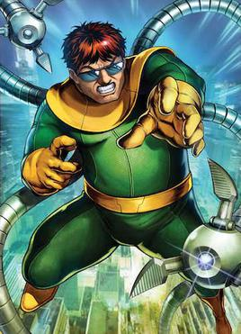
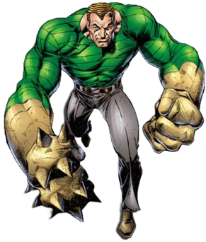
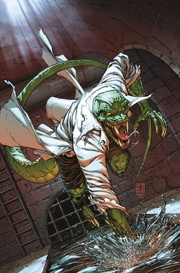
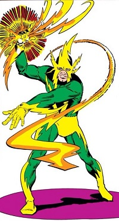

Welcome to the Spider Verse
Here you'll get to know everything about Spider Man in MCU and Sony.
Your Only Guide to watch Spider-Man Brand New Day
Year 1962 - The Birth Of Spider Man
In August 1962
A comic released named as Amazing Fantasy #15 written by Stan Lee & Steve Ditko
Context
- Introduction of Peter Parker
- He was a nerdy Teenager of Queens, New York
- Lived with Aunt May & Uncle Ben
- Was a Science Genius
- Bullied in his High School
The Twist
The Radio-Active Spider
He was bitten by a Radio-Active Spider in a science exhibition which changed everything.
And he got powers
Powers:
- Super Strength
- Wall Crawling
- Enhanced Agility
- Spider Sense
Wrestling Phase
After he got these super powers he didn't became a Super Hero he did Wrestling on TV to earn money with his Super Strength
The Incident
A Criminal was running and Peter was able to stop it but he didn't and said "Not My Problem" and let the criminal run away.
The Death
The Criminal who was ignored by Peter killed his "Uncle Ben"
Then he understands:
"With Great Power Comes Great Responsibility."
And that was the moment when "SPIDER-MAN" was born.
Year 1963 - Beggining of The Amazing Spider-Man
In March 1963
Another Comic released as The Amazing Spider Man 1
After the introduction of Spider-Man it became so popular that a different series of comic started for Spider-Man
New Characters :
-
J. Jonah Jameson
Editor of Daily Bugle.
Believed Spider-Man was a threat.
- Daily Bugle - Newspaper Company
- Fantastic Four Meeting
Spider-Man met fantastic four and tried to join it.
Villains Introduction:

The Vulture
Introduced In The Amazing Spider Man #2
In 1963
First Super Powered Villain.

Doctor Octopus
Introduced In The Amazing Spider Man #3
In 1963
Otto Octavius
Four mechanical arms
One of the Greatest villain of Spider-Man.

Sandman
Introduced In The Amazing Spider Man #4
In 1963
Can convert his body into sand

The Lizard
Introduced In The Amazing Spider Man #6
In 1963
Dr. Curt Connors
Also he was Peter's Mentor.

Electro
Introduced In The Amazing Spider Man #9
In 1963
Year 1964 - Spider-Man Becomes Marvel's Biggest Hero
Till 1964 Spider-Man Became the Most Popular Hero of Marvel.
Major Villains Added:

Mysterio
Introduced In The Amazing Spider Man #13
In 1964
Can ceate Illustions
Special Effects Expert.

Green Goblin
Introduced In The Amazing Spider Man #14
In 1964
Future Arch Enemy
Identity not revealed yet.

Kraven The Hunter
Introduced In The Amazing Spider Man #15
In 1964
Hunter Who wanted to make Spider-Man a Trophy.

Scorpion
Introduced In The Amazing Spider Man #20
In 1964
Wad a Result of J. Jonah Jameson's Experiment.
Sinister Six Formation:

Sinister Six:
Introduced In The Amazing Spider Man Annual #1
In 1964
First Villian Team.
Members:
Doctor Octopus
Vulture
Electro
Mysterio
Sandman
Kraven
Year 1965 - Peter Parker's World Expands
High School Life